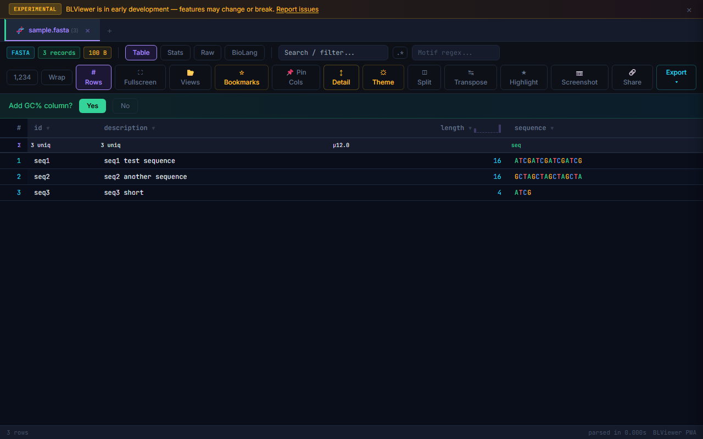
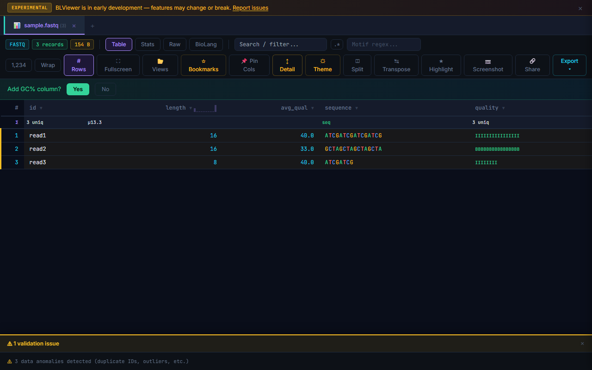

Loading Files
Drag & drop any supported file onto the viewer, use the file picker, or paste text with Ctrl+V. Pasted bioinformatics data (starting with >, @, ##, etc.) is auto-detected and opened as a new tab.
URL loading: Append ?url=https://example.com/data.vcf to load a remote file (requires CORS).

| Format | Extensions | Auto-detected by |
|---|---|---|
FASTA | .fasta, .fa, .fna, .faa | ">" header lines |
FASTQ | .fastq, .fq | "@" header + quality lines |
VCF | .vcf | ##fileformat=VCF header |
BED | .bed | Tab-separated, 3+ cols, chrom/start/end |
GFF/GTF | .gff, .gff3, .gtf | "##gff" or 9 tab columns |
SAM | .sam | @HD/@SQ headers |
CSV/TSV | .csv, .tsv | Comma or tab delimited |

VCF

FASTA

FASTQ
Binary files: BAM, BCF, and CRAM are detected and cannot be viewed directly. Convert to text formats first.